2026年北京市顺义区初中学业水平考试化学试卷 原卷解析
2026年北京市初中学业水平考试(顺义区)
化学试卷
考生须知：
1.本试卷共7页，共两部分，共34题，满分60分。考试时间70分钟。
2.在答题卡上准确填写学校、班级、姓名和准考证号。
3.试题答案一律填涂或书写在答题卡上，在试卷上作答无效。
4.在答题卡上，选择题用2B铅笔作答，其他试题用黑色字迹签字笔作答。
5.考试结束后，将答题卡交回。
可能用到的相对原子质量：S 32 Hg 201
第一部分
本部分共25题，每题1分，共25分。在每题列出的四个选项中，选出最符合题目要求的一项。
1. 空气的成分（体积分数）如下图，体积分数最大的是

A. 氮气B. 二氧化碳C. 氧气D. 稀有气体
【答案】A
【解析】
【详解】空气按体积分数计算：氮气约占78%，氧气约占21%，其余气体和杂质约占1%，所以空气成分中体积分数最大的是氮气。
2. 下列气体中，能供给动植物呼吸的是
A. H2B. O2C. N2D. CO2
【答案】B
【解析】
【详解】动植物在进行呼吸作用时，消耗体内的糖类等有机物和氧气，生成二氧化碳和水，故选B。
3. 下列变化属于化学变化的是
A. 酒精挥发B. 矿石粉碎C. 蜡烛燃烧D. 冰雪融化
【答案】C
【解析】
【详解】A.酒精挥发只是酒精由液态变为气态，仅状态发生改变，无新物质生成，属于物理变化，错误；
B.矿石粉碎仅改变矿石的形状和大小，无新物质生成，属于物理变化，错误；
C.蜡烛燃烧会生成二氧化碳、水等新物质，属于化学变化，正确；
D.冰雪融化是固态水变为液态水，仅状态发生改变，无新物质生成，属于物理变化，错误。
4. 下列生活用品，利用金属导电性的是
A. 铁锅B. 铜导线C. 银饰品D. 不锈钢汤匙
【答案】B
【解析】
【详解】A.铁锅利用的是金属的导热性，便于传递热量烹饪食物，不符合要求；
B.铜的导电性优良，制作铜导线是为了输送电流，利用了金属的导电性，符合题意；
C.银饰品利用的是银的金属光泽、良好延展性和化学稳定性，用于装饰，不符合要求；
D.不锈钢汤匙利用的是不锈钢硬度大、耐腐蚀、无毒的性质，和导电性无关，不符合要求。
5. 下列物质中，属于溶液的是
A. 食盐水B. 酸奶C. 泥水D. 米粥
【答案】A
【解析】
【分析】解题依据：溶液的核心特征是均一、稳定的混合物，久置不会出现分层、沉淀现象，据此逐一判断。
【详解】食盐水是氯化钠溶于水形成的均一、稳定的混合物，符合溶液特征，酸奶、泥水、米粥均不具有均一性、稳定性，不属于溶液。
故选A。
6. 下列物质在 中燃烧，火星四射、生成黑色固体的是
中燃烧，火星四射、生成黑色固体的是
A. 木炭B. 蜡烛C. 铁丝D. 氢气
【答案】C
【解析】
【详解】A.木炭在氧气中燃烧发出白光，生成能使澄清石灰水变浑浊的气体，不符合描述；
B.蜡烛在氧气中燃烧发出白光，瓶壁出现水雾，同时生成能使澄清石灰水变浑浊的气体，不符合描述；
C.铁丝在氧气中剧烈燃烧、火星四射，生成黑色固体，完全符合题干描述；
D.氢气在氧气中燃烧产生淡蓝色火焰，生成水，不符合描述。
全面绿色转型，共建美丽中国。回答7~10题。
7. 垃圾是放错位置的资源。下列属于可回收物的是
A. 苹果皮B. 旧报纸C. 过期药D. 废电池
【答案】B
【解析】
【详解】A.苹果皮属于厨余垃圾，不可回收，错误；
B.旧报纸（纸张）可通过回收处理重新利用，属于可回收物，正确；
C.过期药含有有害物质，属于有害垃圾，不可回收，错误；
D.废电池含有重金属等有害物质，属于有害垃圾，不可回收，错误。
8. 水是生命之源。下列做法不利于保护水资源的是
A. 加强水质监测B. 生活污水任意排放
C. 工业冷却水循环利用D. 合理使用化肥农药
【答案】B
【解析】
【详解】A.加强水质监测可及时排查水体污染隐患，便于及时治理，利于水资源保护，不符合题意。
B.生活污水任意排放会直接污染水体，破坏水环境，不利于保护水资源，符合题意。
C.工业冷却水循环利用能提高水资源利用率，属于节约用水的有效措施，利于水资源保护，不符合题意。
D.合理使用化肥农药可减少残留物质随径流进入水体造成的污染，利于水资源保护，不符合题意。
9. 能源是生产生活的重要保障。下列不属于化石能源的是
A. 煤B. 石油C. 天然气D. 风能
【答案】D
【解析】
【详解】化石能源是古代生物遗骸经过漫长地质作用形成的不可再生能源，初中阶段明确的三大化石能源为煤、石油、天然气，因此A、B、C均属于化石能源；风能属于可再生的清洁能源，不属于化石能源，因此选D。
10. 一些食物的pH范围如下，其中呈碱性的是
A. 柠檬汁(2.0~3.0)B. 菠萝汁(3.3~5.2)
C. 鸡蛋清(7.6~8.0)D. 牛奶(6.3~6.6)
【答案】C
【解析】
【详解】解题依据为常温下溶液酸碱性与 的对应关系：时溶液呈酸性，时溶液呈中性，时溶液呈碱性。
的对应关系：时溶液呈酸性，时溶液呈中性，时溶液呈碱性。
故选C。
11. 下列标志表示“禁止吸烟”的是
A.  B.
B.  C.
C.  D.
D. 
【答案】D
【解析】
【详解】A.该标志是爆炸品危险化学品标识，用于标注易爆类物品，不符合题意。
B.该标志是禁止带火种标识，用于提示禁止携带火柴等火种进入相关区域，不符合题意。
C.该标志是腐蚀品危险化学品标识，用于标注具有腐蚀性的化学物品，不符合题意。
D.该标志为禁止吸烟标识，图案为被禁止符号（圆圈加斜杠）划掉的点燃香烟，符合题意。
12. 氮肥能促叶增绿。下列物质能用作氮肥的是
A.  B.
B.  C.
C.  D.
D. 
【答案】C
【解析】
【分析】化肥按所含核心营养元素分类：仅含氮元素（ ）的为氮肥，仅含钾元素（
）的为氮肥，仅含钾元素（ ）的为钾肥，仅含磷元素（
）的为钾肥，仅含磷元素（ ）的为磷肥。同时含有氮、磷、钾三种元素中的两种或两种以上的肥料称为复合肥。
）的为磷肥。同时含有氮、磷、钾三种元素中的两种或两种以上的肥料称为复合肥。
【详解】A.含钾元素，属于钾肥，不符合要求；
B. 含钾元素，属于钾肥，不符合要求；
含钾元素，属于钾肥，不符合要求；
C.含氮元素，属于氮肥，符合要求；
D. 含磷元素，属于磷肥，不符合要求。
含磷元素，属于磷肥，不符合要求。
13. 下列符号中，表示2个氧原子的是
A. 2OB. C.  D.
D. 
【答案】A
【解析】
【详解】 A. 中O是氧的元素符号，前面的2代表2个氧原子，符合要求。
中O是氧的元素符号，前面的2代表2个氧原子，符合要求。
B.右下角的2表示1个氧分子中含2个氧原子，整体代表氧分子/氧气，不符合。
C.右上角的 表示1个氧离子带2个单位负电荷，整体代表氧离子，不符合。
表示1个氧离子带2个单位负电荷，整体代表氧离子，不符合。
D. 代表氢分子/氢气，不含氧原子，不符合。
代表氢分子/氢气，不含氧原子，不符合。
14. 下列操作正确的是
A. 读取液体体积 B. 倾倒液体
B. 倾倒液体
C. 加热液体 D. 熄灭酒精灯
D. 熄灭酒精灯
【答案】C
【解析】
【详解】A.量筒读取液体体积时，视线需与液体凹液面最低处保持水平，图中为俯视读数，会使读数偏大，操作错误。
B.倾倒液体的正确要求是瓶塞倒放、标签朝向手心、试剂瓶口紧挨试管口，图中瓶塞正放、瓶口未紧贴试管口，操作错误。
C.加热液体时，使用酒精灯外焰加热，液体体积小于试管容积的 ，试管夹夹持在距试管口处，试管倾斜与桌面约成45°，符合操作规范，操作正确。
，试管夹夹持在距试管口处，试管倾斜与桌面约成45°，符合操作规范，操作正确。
D.熄灭酒精灯需用灯帽盖灭，用嘴吹易将火焰压入灯内引发燃烧爆炸，操作错误。
15. 下列燃料在中燃烧，不会产生 的是
的是
A. CB.  C.
C.  D.
D.
【答案】D
【解析】
【详解】A. 碳单质含碳元素，在足量氧气中充分燃烧生成 ，反应方程式为：
，反应方程式为： 不符合要求。
不符合要求。
B.  含碳元素，燃烧反应为
含碳元素，燃烧反应为 ，生成，不符合要求。
，生成，不符合要求。
C. 含碳元素，完全燃烧反应为 ，生成，不符合要求。
，生成，不符合要求。
D. 仅含氢元素，燃烧反应为 ，产物只有水，不会产生，符合要求。
，产物只有水，不会产生，符合要求。
16. 下列物质能除铁锈的是
A. 盐酸B. 植物油C. 石灰水D. 水
【答案】A
【解析】
【详解】铁锈的主要成分为氧化铁（ ），属于金属氧化物，可与酸反应生成可溶性盐和水，其他几种物质均不与氧化铁反应。故选A。
），属于金属氧化物，可与酸反应生成可溶性盐和水，其他几种物质均不与氧化铁反应。故选A。
传统节日蕴含丰富的文化内涵。完成下面小题。
17. 春节蒸发糕。小苏打(碳酸氢钠)可作为发糕制作的膨松剂，其化学式为
A.  B.
B.  C.
C.  D.
D. 
18. 元宵节做灯笼。下列制作灯笼的部件中，用到金属材料的是
A. 纸质灯罩B. 竹制骨架C. 丝绸灯穗D. 铜制挂钩
19. 重阳节赏菊。能闻到菊花香的原因是
A. 分子在不断运动B. 分子间有空隙
C. 分子的质量很小D. 分子由原子构成
【答案】17. D 18. D 19. A
【解析】
【17题详解】
碳酸氢钠俗称小苏打，由 和
和 构成，化学式为。
构成，化学式为。
【18题详解】
铜制挂钩的铜属于纯金属，为金属材料；纸质灯罩、竹制骨架、丝绸灯穗都属于天然有机材料。
【19题详解】
闻到花香是因为带有香味的分子在不断运动，扩散到空气中被人感知。
20. 电解水实验如下图。下列说法不正确的是

A. 试管1中得到H2
B. 水由H2、O2组成
C. 水由氢、氧元素组成
D. 试管1、2中气体的体积比约为2∶1
【答案】B
【解析】
【分析】在电解水实验中，“正氧负氢”，生成氢气和氧气的体积比约为2:1。
【详解】A.试管1连接电源负极，负极产生，说法正确。
B.水是纯净物，仅由水分子构成，不含、两种物质，说法错误。
C.电解水生成和，根据反应前后元素种类不变，可证明水由氢、氧元素组成，说法正确。
D.试管1中是，试管2中是，二者体积比约为 ，说法正确。
，说法正确。
21. 下列关于CO2的实验室制取及性质实验的说法不正确的是

| 
|
A．发生装置 | B．验满 |

| 
|
C．比较CO2与空气的密度 | D．验证CO2不支持燃烧 |
A. AB. BC. CD. D
【答案】B
【解析】
【详解】A. 实验室制取为固液不加热型反应，该装置长颈漏斗末端浸入液面下可形成液封，导管仅露出橡皮塞便于气体导出，装置合理，操作正确。
B. 验满的正确操作是将燃着的木条放在集气瓶口，木条熄灭则证明已满，图中将木条伸入集气瓶内部，操作错误。
C. 向右侧纸袋倒入后右侧下沉，可证明密度大于空气，实验设计正确。
D. 向放有燃着蜡烛的烧杯中倒入，蜡烛熄灭，可验证不支持燃烧的性质，操作正确。
Na2CO3可用于制造玻璃。20℃时，按下表数据配制溶液。完成下面小题。
序号 | ① | ② | ③ | ④ |
Na2CO3的质量/g | 10 | 15 | 20 | 25 |
水的质量/g | 100 | 100 | 100 | 100 |
资料：20℃时，Na2CO3的溶解度为21.5 g。
22. 所得溶液中，溶质与溶剂的质量比为1∶10的是
A. ①B. ②C. ③D. ④
23. ③中溶质的质量分数约为
A. 25.0%B. 21.5%C. 16.7%D. 20.0%
24. 所得溶液中，属于饱和溶液的是
A. ①B. ②C. ③D. ④
【答案】22. A 23. C 24. D
【解析】
【22题详解】
20℃时 溶解度为21.5g，即100g水最多溶解21.5g溶质。①中10g溶质完全溶解，溶质与溶剂质量比为
溶解度为21.5g，即100g水最多溶解21.5g溶质。①中10g溶质完全溶解，溶质与溶剂质量比为 ，符合要求；②③溶质质量分别为15g、20g，比例不符合；④仅能溶解21.5g溶质，比例为
，符合要求；②③溶质质量分别为15g、20g，比例不符合；④仅能溶解21.5g溶质，比例为 ，不符合。
，不符合。
【23题详解】
③中加入20g溶质小于21.5g，可完全溶解。溶质质量分数公式为 ，代入数据得
，代入数据得 。
。
【24题详解】
20℃下100g水最多溶解21.5g，加入溶质质量大于21.5g时溶液饱和。①②③加入的溶质质量均小于21.5g，为不饱和溶液；④加入25g溶质大于21.5g，固体不能完全溶解，为饱和溶液。
25. 肼(N2H4)是一种高能火箭燃料，燃烧前后分子种类变化的微观示意图如下：

下列说法不正确的是
A. 乙和丙均为氧化物
B. 反应前后氮原子个数相等
C. 甲和丙的元素组成不同
D. 参加反应的甲和乙的分子个数比为1∶1
【答案】A
【解析】
【详解】A. 氧化物定义是由两种元素组成、且其中一种为氧元素的化合物。乙是，属于单质，不属于氧化物，说法错误。
B. 根据质量守恒定律，化学反应前后原子的种类、个数均不变，因此反应前后氮原子个数相等，说法正确。
C. 甲由N、H两种元素组成，丙由H、O两种元素组成，元素组成不同，说法正确。
D. 由配平的反应方程式 可知，参加反应的甲、乙的化学计量数之比为
可知，参加反应的甲、乙的化学计量数之比为 ，即分子个数比为，说法正确。
，即分子个数比为，说法正确。
第二部分
本部分共9题，共35分。
〖实际问题的分析与解决〗
中华优秀传统文化是中华文明的智慧结晶。回答26~27题。
26. 中国是瓷器的故乡。瓷器主要由胎体、釉层和彩料三部分组成。
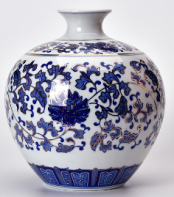
（1）下列胎体中的元素，属于金属元素的是___________(填序号)。
A. 硅B. 铝C. 氧
（2）青瓷的青色与FeO有关。FeO中氧元素为-2价，铁元素的化合价为___________。
（3）青花瓷的蓝色，源于绘制时使用的含钴颜料。钴元素在元素周期表中的信息如下图，钴元素的相对原子质量是___________。
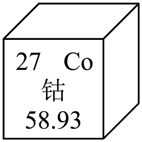
【答案】（1）B （2）
+2价（或+2） （3）
58.93
【解析】
【小问1详解】
金属元素名称多带“钅”字旁，铝带“钅”属于金属元素，硅（石字旁）、氧（气字头）都属于非金属元素。
【小问2详解】
化合物中正负化合价代数和为0，设铁元素化合价为 ，则，解得。
，则，解得。
【小问3详解】
元素周期表单元格最下方的数值为对应元素的相对原子质量，由图可知钴的相对原子质量是58.93。
27. 《抱朴子》中记载“丹砂(含HgS)烧之成水银，积变又还成丹砂”。
（1）“丹砂烧之成水银”涉及的化学反应是。若制得201 g Hg，计算参加反应的HgS的质量(补全计算过程)。
【解】设：参加反应的HgS的质量为x。
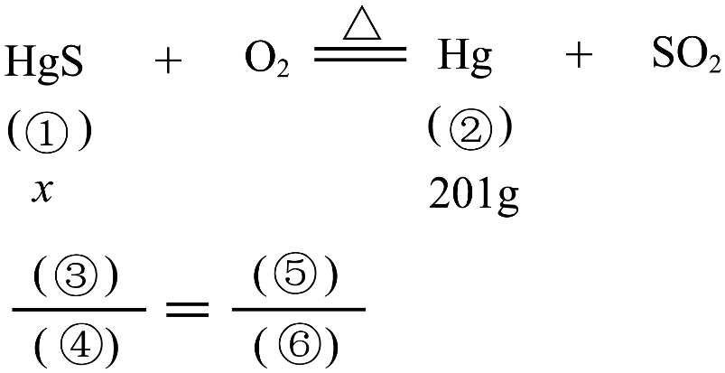
以上答案依次填在此处横线上①___、②___、③___、④___、⑤___、⑥___。
x=___g。
答：参加反应的HgS的质量为___g。
（2）“积变又还成丹砂”，即，该反应属于______(填序号)。
A. 化合反应B. 分解反应C. 置换反应D. 复分解反应
【答案】（1） ①. 233 ②. 201 ③. 233 ④. 201 ⑤. x ⑥. 201g ⑦. 233 ⑧. 233 （2）A
【解析】
【小问1详解】
化学方程式计算中，相对质量之比等于实际质量之比，根据常见相对原子质量：Ar(Hg)=201，Ar(S)=32，因此： HgS的相对分子质量，Hg的相对原子质量为201，因此①填233，②填201； 因此列比例式为对应③填233、④填201、⑤填x、⑥填； 计算可得：
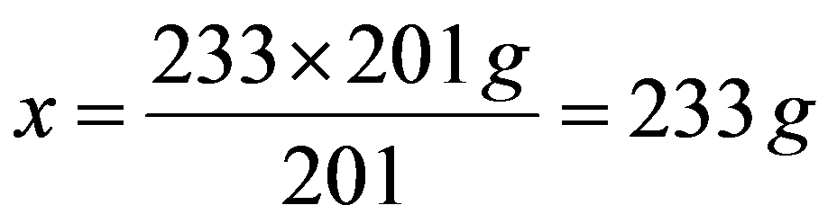
。【小问2详解】
该反应为两种反应物（和）生成一种产物（），符合化合反应“多变一”的特征，因此属于化合反应，选A。
28. 加氢制甲醇是实现“碳中和”的途径之一，主要工艺流程如下：
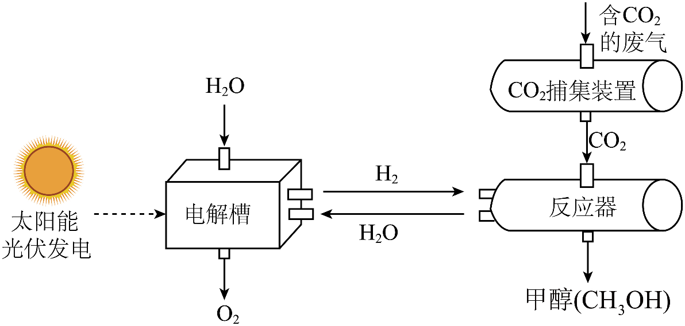
（1）电解槽中发生反应的化学方程式为___________。
（2）上述工艺流程涉及的物质中，属于单质的是___________。
（3）反应器中主要发生如下反应，配平化学方程式，答案依次为_______、_______。
（4）捕集装置中可用的吸收剂是___________。
A. 稀硫酸B. NaOH溶液
【答案】（1）
（2）氢气和氧气（H2和O2）
（3） ①. 3 ②. 1
（4）B
【解析】
【小问1详解】
电解槽中反应物为水，生成物为氢气和氧气，反应条件为通电，根据质量守恒定律配平即可得到对应化学方程式。
【小问2详解】
单质是由同种元素组成的纯净物，流程涉及的物质中仅氢气、氧气符合单质定义，其余均为不同元素组成的化合物。
【小问3详解】
根据质量守恒定律，反应前后原子种类、数目不变：由反应物中有1个碳原子可知，生成物CH3OH的化学计量数为1；反应后共有H原子：1×4+1×2=6个，故反应物H2的化学计量数为3。
【小问4详解】
是酸性氧化物，可与NaOH溶液反应被吸收，与稀硫酸不发生反应，因此选B。
【科普阅读理解】
29. 阅读下面科普短文。
北京烤鸭是享誉世界的名菜，具有色泽红艳、皮脆肉嫩、肥而不腻等特点。
北京烤鸭主要有焖炉和挂炉两种做法。挂炉烤鸭需经选料、制坯、烫皮、浇糖液、风干、灌汤、挂烤等工序。其中浇糖液环节需要将1份麦芽糖与6份水配制成溶液，熬至棕红色后淋遍鸭身，以使烤鸭形成枣红色脆皮。
鸭肉嫩度的形成，是烤制过程中水分迁移、脂肪融化与蛋白质变性等因素共同作用的结果。挂炉烤制时，鸭体水分含量变化如图1所示。
北京烤鸭部分营养成分含量见表1.作为高脂肪、高蛋白的食物，我们在享受其美味的同时，应当适量食用。
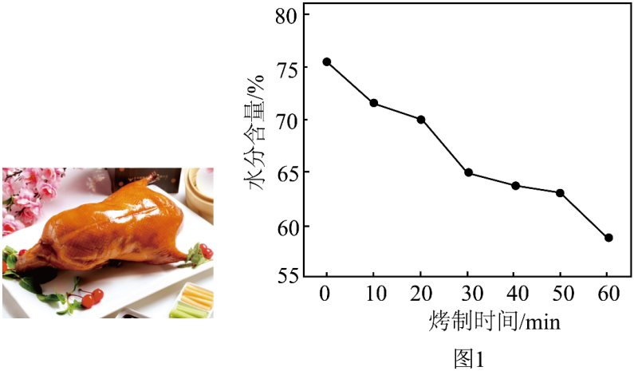
表1 北京烤鸭的部分营养成分(每100 g)
碳水化合物 | 脂肪 | 蛋白质 | 钙 |
6.0 g | 38.4 g | 16.6 g | 35.0 mg |
依据文章内容回答下列问题。
（1）北京烤鸭的特点有___________。
（2）麦芽糖()中，碳、氧原子的个数比为___________。
（3）麦芽糖与水配成的溶液中，溶剂是___________。
（4）判断下列说法是否正确(填“对”或“错”)。
①脂肪融化的程度决定了烤鸭的嫩度。___________
②表1中，营养成分含量最高的是脂肪。___________
（5）由图1可知，烤制过程中鸭体水分含量与烤制时间的关系是：烤制0~60 min内，___________。
【答案】（1）
色泽红艳、皮脆肉嫩、肥而不腻
（2）
（3）
水（或 ）
）
（4） ①.
错 ②.
对 （5）
鸭体水分含量随烤制时间的延长逐渐降低
【解析】
【小问1详解】
可直接从题干第一段对北京烤鸭特点的描述中提取。
【小问2详解】
麦芽糖化学式为，分子中碳、氧原子个数比等于化学式中对应元素的下标之比，即。
【小问3详解】
有水参与形成的溶液中，默认水为溶剂，麦芽糖为溶质。
【小问4详解】
①题干明确说明鸭肉嫩度是水分迁移、脂肪融化与蛋白质变性共同作用的结果，并非仅由脂肪融化程度决定，因此说法错误；
②对比表1数据，每100g烤鸭中脂肪含量38.4g，为所列营养成分中最高，因此说法正确。
【小问5详解】
由图1的曲线变化趋势可知，0~60min内烤制时间越长，鸭体的水分含量越低。
〖基本实验及其原理分析〗
30. 根据下图回答问题。
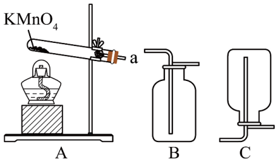
（1）用制取的化学方程式为___________。将带火星的木条置于a处，若观察到___________，说明已有产生。
（2）收集的装置是___________(填序号)。
【答案】（1） ①.  ②.
②.
带火星的木条复燃 （2）B
【解析】
【小问1详解】
略；
氧气具有助燃性，能使带火星的木条复燃，可通过该现象验证氧气生成。
【小问2详解】
氧气密度大于空气，需用向上排空气法收集，装置B为向上排空气装置，符合收集要求。
31. 下图是去除粗盐中难溶性杂质实验。
①溶解操作 | ②___________ | ③蒸发所需仪器 |
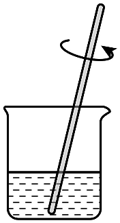 | 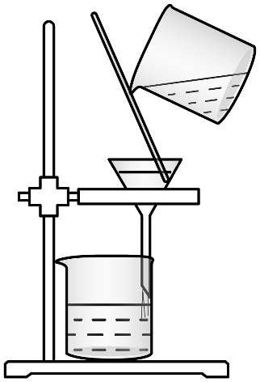 | 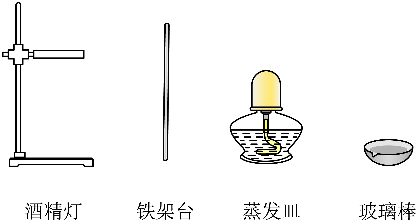 |
（1）①中，用玻璃棒搅拌的目的是___________。
（2）操作②的名称是___________。
（3）补齐③中仪器与名称的连线__________。
【答案】（1）
加快粗盐的溶解速率 （2）
过滤 （3）
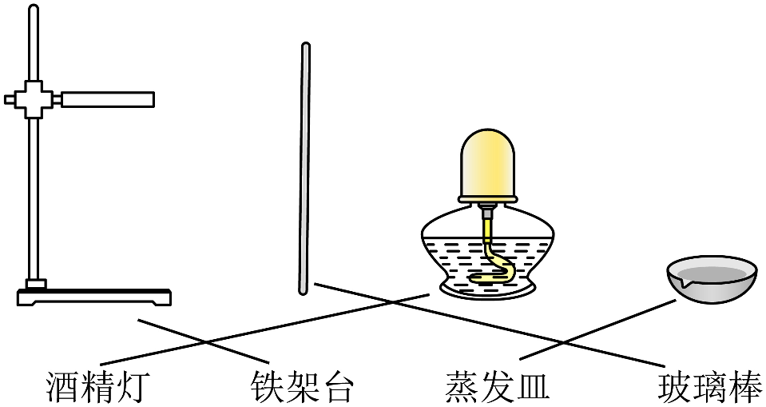
【解析】
【小问1详解】
溶解操作中玻璃棒搅拌可以加速溶质扩散，从而提升粗盐的溶解速度。
【小问2详解】
去除粗盐中难溶性杂质的核心步骤为溶解、过滤、蒸发，图②是典型的固液分离过滤装置，因此对应操作是过滤。
【小问3详解】
略。
32. 用下图实验验证可燃物燃烧的条件。通入前，白磷均不燃烧；通入后，A中白磷不燃烧，B中白磷燃烧。
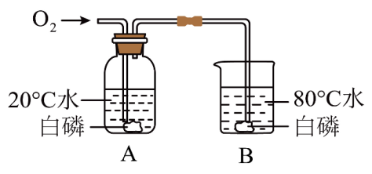
已知：白磷的着火点为。
（1）白磷燃烧生成的白色固体是___________。
（2）能验证可燃物燃烧需要温度达到着火点的现象是___________。
（3）某同学认为“该实验不能证明可燃物燃烧需要与接触”，你是否同意此观点，并说明理由：___________。
【答案】（1）
五氧化二磷##
（2）
通入后，A中白磷不燃烧，B中白磷燃烧
（3）
不同意，B中白磷通入前不燃烧，通入后燃烧，即可证明可燃物燃烧需要与接触
【解析】
【小问1详解】
略。
【小问2详解】
验证燃烧需要温度达到着火点时，需控制可燃物、与氧气接触两个条件一致，仅温度不同；通入氧气后，A中温度为低于着火点，B中温度为高于着火点，二者现象不同，可证明该燃烧条件。
【小问3详解】
通入前，B中白磷温度达到着火点，但无氧气接触，不燃烧；通入后，温度仍达到着火点且有氧气接触，发生燃烧，两组对比的变量仅为是否与氧气接触，可证明燃烧需要与氧气接触。
33. 用下图实验研究金属的性质。
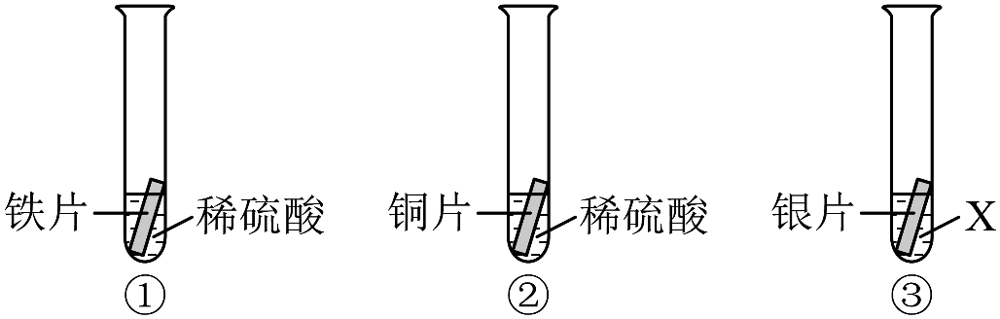
（1）①中反应的化学方程式为___________。
（2）能证明铜不与稀硫酸发生反应的现象是___________。
（3）为验证铁、铜、银的金属活动性顺序，X应为___________(填序号)。
A. 稀硫酸B. 溶液C. 溶液
【答案】（1）
（2）
②中铜片表面无气泡产生，溶液颜色无明显变化
（3）B
【解析】
【小问1详解】
铁与稀硫酸发生置换反应，生成硫酸亚铁和氢气，注意铁在该反应中显+2价。
【小问2详解】
金属与酸若发生反应通常会产生氢气，铜片放入稀硫酸无气泡生成，即可证明二者不反应，铜不与稀硫酸反应，不会生成含的蓝色溶液，故溶液颜色无明显变化。。
【小问3详解】
①②实验已经证明活动性：铁>铜，只需再验证铜和银的活动性顺序即可。为溶液时，银片放入无明显现象，说明铜活动性强于银，可得出铁>铜>银的完整顺序；稀硫酸与铜、银都不反应，溶液与铜、银都不反应，均无法比较铜和银的活动性。
〖科学探究〗
34. 醋酸钙是一种常见的补钙剂。实验小组用真空微波辅助法以鸡蛋壳和醋酸为原料制备醋酸钙，探究影响醋酸钙产率的因素。
【查阅资料】Ⅰ、鸡蛋壳的主要成分是碳酸钙。
Ⅱ、醋酸是一种酸，由氢元素和醋酸根组成。
【进行实验】取3 g鸡蛋壳粉，按一定固液比加入30%的醋酸溶液，在微波功率400 W下反应一定时间后，在室温下继续反应至总反应时间达到2 h，过滤、蒸发浓缩、自然冷却，得到醋酸钙晶体，测定醋酸钙含量并计算产率。实验记录如下：
序号 | 固液比/ | 微波时间/min | 醋酸钙产率/% |
① | 1∶5 | 1.0 | 92.2 |
② | 1∶6 | 1.0 | 91.1 |
③ | 1∶8 | 1.0 | 86.3 |
④ | 1∶5 | 1.5 | 93.7 |
⑤ | 1∶5 | 2.0 | 92.1 |
【解释与结论】
（1）补钙剂中的“钙”指的是___________(填“元素”或“原子”)。
（2）实验前将鸡蛋壳粉碎成粉末，目的是___________。
（3）碳酸钙与醋酸发生复分解反应，生成物除醋酸钙之外还有___________。
（4）探究固液比对醋酸钙产率影响的实验是___________(填序号)。
【反思与评价】
（5）依据实验数据，不能得出“固液比等条件相同时，微波时间越长，醋酸钙产率越高”的结论，其证据是___________。
（6）继续实验，发现微波功率500 W时醋酸钙的产率高于400 W时的产率，其实验方案为___________。
【答案】（1）
元素 （2）
增大反应物接触面积，加快反应速率，使反应更充分
（3）
二氧化碳和水（或和）
（4）
①②③ （5）
固液比为1:5时，微波时间2.0min的醋酸钙产率为92.1%，低于微波时间1.5min的产率93.7%
（6）
取3g鸡蛋壳粉，按固液比1:5加入30%的醋酸溶液，在微波功率500W下反应1.5min，之后室温下继续反应至总时间为2h，后续过滤、蒸发浓缩、冷却等操作与实验④完全相同，测定得到的醋酸钙产率高于93.7%
【解析】
【小问1详解】
食品、补钙剂中的营养成分是宏观描述，指元素，与具体存在形态无关。
【小问2详解】
固体粉碎后与液体反应物的接触面积增大，既可以加快反应速率，也能让反应进行得更完全。
【小问3详解】
碳酸盐与酸的复分解反应通式为“碳酸盐+酸→盐+二氧化碳+水”，因此碳酸钙和醋酸反应除生成醋酸钙外，还生成和。
【小问4详解】
探究固液比的影响需控制其余变量相同，①②③的微波时间均为1.0min，仅固液比不同，符合对照实验的单一变量原则。
【小问5详解】
当固液比等条件相同时，微波时间从1.5min延长到2.0min，产率反而下降，因此不能得出“微波时间越长产率越高”的结论。
【小问6详解】
取3g鸡蛋壳粉，按固液比1:5加入30%的醋酸溶液，在微波功率500W下反应1.5min，之后室温下继续反应至总时间为2h，后续过滤、蒸发浓缩、冷却等操作与实验④完全相同，测定得到的醋酸钙产率高于93.7%